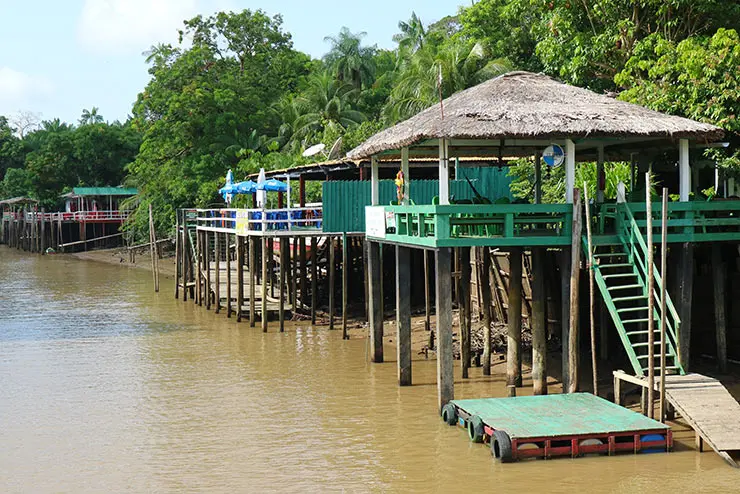
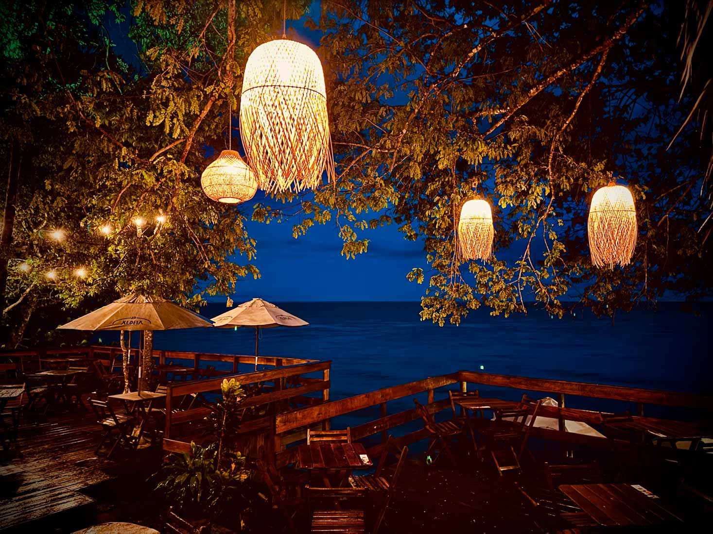
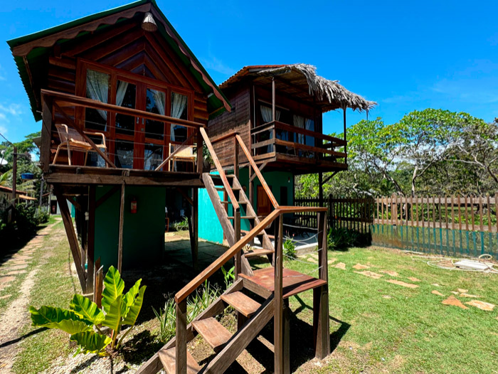

Ilha do Combu



Experiência no local
- Gastronomia e Lazer: Restaurantes como Saldosa Maloca, Boá, Porto Combu e Chalé da Ilha oferecem almoço com vista para o rio, redes para relaxar e acesso a banhos.
- Acesso e Transporte: Lanchas da cooperativa saem do Terminal Hidroviário Ruy Barata (Praça Princesa Isabel) com custo aproximado de R$ 10 a R$ 20 (ida e volta), uncionando geralmente até às 18h.
- Rota Combu: Nova iniciativa que integra 14 experiências, incluindo oficinas de biojoias e vivências de açaí.
Atrações
- Basílica de Nossa Senhora de Nazaré
- Ruínas do Antigo Presídio: Local histórico que funcionou no século XX, oferecendo uma visita cultural sobre o passado da ilha.
- Praia do Farol: Próxima ao porto, possui boa estrutura de barracas, restaurantes e é ótima para assistir ao pôr do sol.
Gastos no local

Restaurantes
Pratos simples peixe, frango, regional, R$20,00 A R$50,00
Bebidas
R$5,00 a R$15,00

Hospedagem
Quarto simples
Quarto com ar-condicionado
R$ 100,00 simples, R$150,00 C/ ar-condicionado

Passeio de charrete
transporte turístico de charrete
Trajetos curto: R$5,00. Trajetos completos(porGrupo): R$80,00
Sobre a ilha de cotijuba
A Ilha de Cotijuba é um refúgio natural de água doce próximo a Belém (PA), a cerca de 20 km da capital, conhecido pelas praias de areia branca, como a do Vai-quem-quer e do Farol. É uma Área de Proteção Ambiental (APA) onde o tráfego de carros é proibido, sendo o transporte feito por charretes, bicicletas e "motorés"
- Na Telha (Praia do Vai-Quem-Quer)
- Pousada Bar e Restaurante Farol (Praia do Farol)
- Bar e Restaurante da Pousada AldeiA (Flexeira)
- Feira de Artesanato (Orla)
- Pôr do Sol